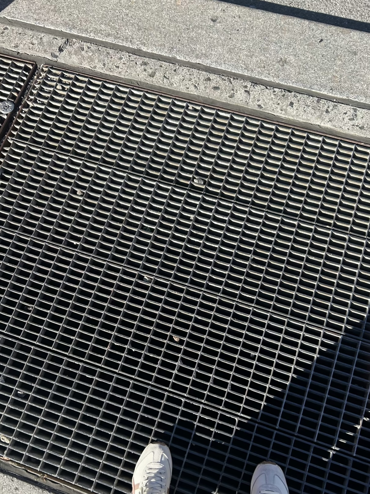

Warmth, Touch, Grain, Weight, Texture, Trace, Smell, Sound, Uniqueness, Memory
This website is a collection of tangible objects — a small archive of things that can be touched, held, and kept. It explores why these items still matter and what kind of warmth they bring in contrast to digital media.
In today's electronic society, almost everything has turned into screens and files. Yet physical objects carry a unique sense of presence: the texture of paper, the weight of a vinyl record, or the sound of a cassette tape spinning. They feel alive in a way that digital cannot replace.
I have always been drawn to real, physical things. A handwritten note feels more personal than a text message, and listening to music on a CD or vinyl feels more intentional than streaming. These objects create simple rituals and moments of connection that bring comfort and warmth.
